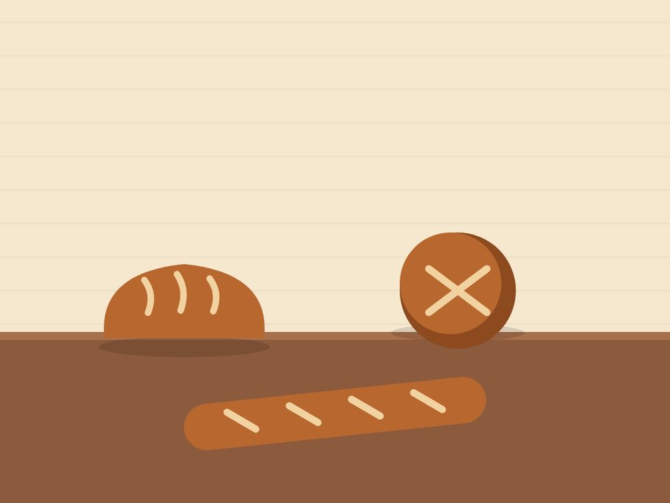
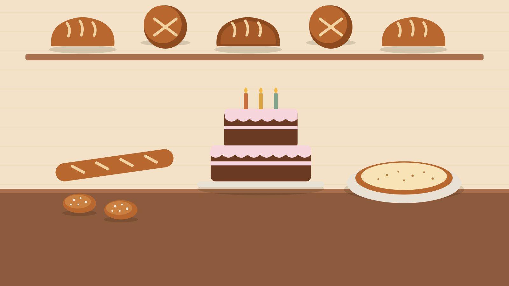
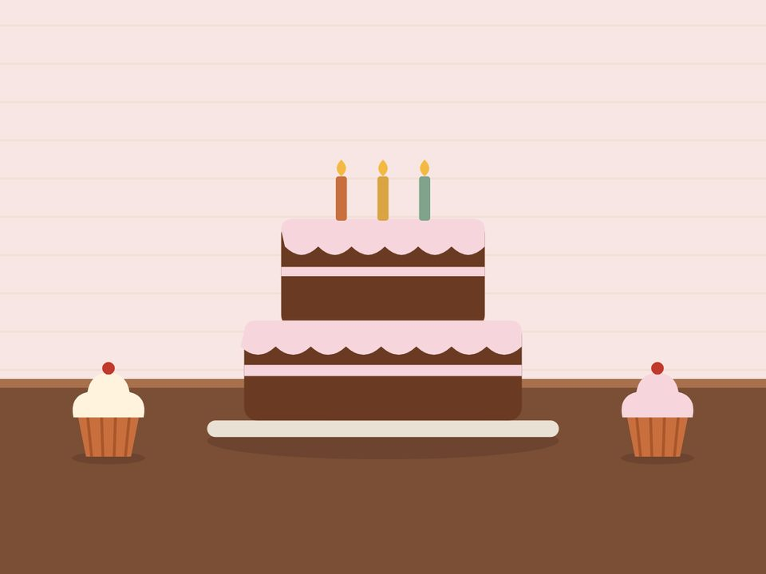
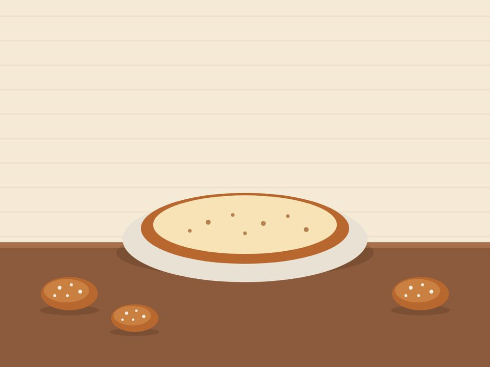
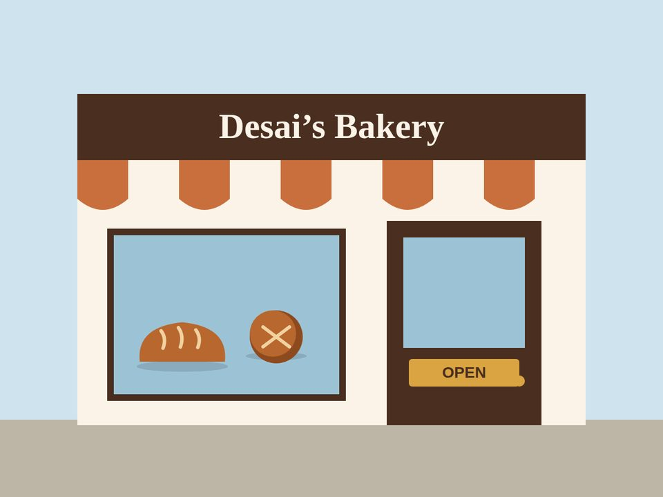

Grassy Park, Cape Town
Fresh baked, every day.
Family recipes, honest prices and bread that’s still warm when you get it home. Celebration cakes made to order.

Today at the bakery
Baked today
Every day has its own specials, from rotis on Friday to koesisters on Sunday. See the full menu.
What we bake
Everything is baked on site in Grassy Park each morning. Pick a category to see prices.


Tarts & treats
Milk tart, hertzoggies and Sunday-morning koesisters, just like Granny made.
View tarts & treats
From a home kitchen to Victoria Road
What started as Farzana Desai baking for neighbours in 2014 became a small shop in 2018. Her son Jadeed now runs the bread ovens, which is where “Jadeed’s Bread” comes from.
Read our storyWhy Grassy Park shops with us
Baked this morning
Nothing on the shelf is older than today. Leftovers go to the community feeding scheme.
Fair prices
A fresh white loaf for R19. We keep everyday bread affordable for families.
Made to order
Tell us the occasion and budget and we’ll design a cake around it.